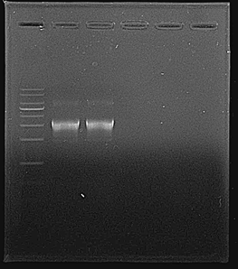

[실습 02] 플라스미드 DNA 추출 및 아가로스 겔 전기영동 분석 결과 보고서
1. 서론 (Introduction)
본 실험의 목적은 서로 다른 항생제 저항성 유전자를 가진 두 플라스미드 벡터(pET28a, pUC-GID)를 고순도로 추출하고, 아가로스 겔 전기영동을 통해 플라스미드의 크기와 구조적 형태(Topology)를 확인하는 것이다.
- pET28a 벡터: 카나마이신(Kanamycin) 저항성 유전자 ($Kan^{R}$)를 포함하고 있어, 선택 배지에 카나마이신을 첨가하여 해당 플라스미드를 가진 균주를 선택적으로 배양한다.
- pUC-GID 벡터: 암피실린(Ampicillin) 저항성 유전자 ($Amp^{R}$)를 포함하고 있어, 선택 배지에 암피실린을 첨가하여 해당 플라스미드를 가진 균주를 선택적으로 배양한다.
2. 실험 재료 및 방법 (Materials & Methods)
2.1 균주 배양 및 수확 (Cell Cultivation & Harvest)
- 각각 카나마이신과 암피실린이 첨가된 100mL LB 배지에 pET28a와 pUC-GID 균주를 접종한 후, 진탕배양기에서 12시간 배양했다.
- 배양액 1.5mL를 마이크로 튜브에 분주하고 13,000rpm에서 3분간 원심분리하여 상층액을 제거했다. 세포 농축을 위해 이 과정을 한 번 더 반복하여 세포 펠렛(Cell pellet)을 확보했다.
2.2 플라스미드 DNA 추출 (Plasmid Isolation)
- 재부유 (Resuspension): 세포 펠릿에 Resuspension Buffer 250µL를 첨가하고 볼텍싱하여 세포를 균일하게 분산시켰다.
- 세포 용해 (Lysis): Lysis Buffer 250µL를 첨가한 후, 튜브를 조심스럽게 십여 차례 뒤집어 섞었다.
- 중화 (Neutralization): Neutralization Buffer 350µL를 첨가하고 다시 십여 차례 뒤집어 섞었다.
- 원심분리 및 로딩: 13,000rpm에서 10분간 원심분리하여 변성된 염색체 DNA와 세포잔해물이 뭉친 흰색 침전물을 가라앉히고, 플라스미드가 포함된 상층액만을 미니 컬럼(Mini Column)으로 옮겼다.
- 결합 및 세척 (Binding & Washing): 13,000rpm에서 10분간 원심분리하여 DNA를 컬럼의 실리카 막에 흡착시킨 후 통과액을 제거했다. 이후 Washing Buffer A 500µL와 Washing Buffer B 700µL를 순차적으로 로딩하여 동일한 조건으로 원심분리하고 잔류 불순물을 세척했다.
- 건조 및 용출 (Dry & Elution): 컬럼 내부의 잔류 에탄올을 완전히 제거하기 위해 빈 컬럼 상태로 13,000rpm에서 1분간 추가 원심분리를 했다. 컬럼을 새 튜브에 장착한 후, Elution Buffer 50µL를 막 중심에 로딩하고 2~3분간 방치한 뒤 1분간 원심분리하여 고순도의 플라스미드 DNA 용액을 얻었다.
2.3 아가로스 겔 전기영동 (Agarose Gel Electrophoresis)
- 완충액 및 아가로스 칭량: 0.5X TAE Buffer 80mL를 삼각 플라스크에 측량하여 넣은 후, 0.8% 농도에 맞추어 아가로스 분말 0.64g을 칭량하여 첨가했다.
- 가열 및 용해: 삼각플라스크의 입구를 랩으로 막고 구멍을 낸 후, 전자레인지를 이용하여 용액이 끓어오를 때까지 가열했다. 아가로스 분말 입자가 완전히 소실되어 용액이 투명해질 때까지 2~3회 반복하여 흔들어주며 균일하게 용해시켰다.
- 냉각 및 염색제 첨가: 용해된 아가로스 용액을 실온에서 약 50~60℃ 정도로 냉각시켰다. 용액이 적절히 식으면 핵산 염색제(Eco Dye)를 4µL 첨가했다.
- 젤 캐스팅 (Casting): 젤 트레이에 웰을 형성할 콤을 장착한 후, 준비된 아가로스 용액을 기포가 생기지 않도록 주의하며 서서히 부었다.
- 굳히기 및 콤 제거: 실온에서 30~40분간 방치하여 젤이 불투명하게 완전히 굳으면, 콤을 수직으로 올려 DNA를 로딩할 웰을 형성했다.
- 샘플 및 마커 로딩 (Sample Loading): 추출한 플라스미드 DNA 5µL에 6X Loading Buffer (1:1:1:1 BPB XC OG : CR)를 첨가하여 최종 부피 6µL로 균일하게 혼합한 후 웰에 로딩했다. 플라스미드의 크기를 비교 및 측정하기 위해 1kb DNA Ladder 5µL를 별도의 웰에 병렬로 로딩했다.
- 전기영동 구동: 젤 탱크에 100V의 전압을 인가하여 DNA가 음극에서 양극으로 이동하도록 전압과 시간을 조절하여 전개를 수행했다.
3. 결과 및 고찰 (Results & Discussion)

[그림 1] 아가로스 겔 전기영동 분석 결과 (좌: pUC-GID / 우: pET28a)
- 사진 상 가장 밝고 뚜렷하게 나타난 하단의 주 밴드는 Supercoiled 형태이다.
- 주 밴드 상단에 매우 희미하게 관찰되는 밴드들은 실험 과정 중 Lysis Buffer 처리 후 과도하게 섞거나 Elution 단계에서 물리적 충격이 가해질 경우에 발생하는 현상이다.
- 밴드 하단이나 웰 주변에 끌림 현상이 거의 관찰되지 않았다. 이는 단백질이나 genomic DNA 등의 불순물이 효과적으로 제거되었음을 의미하며, 고순도의 플라스미드가 추출되었음을 확인해 준다.
🏠 메인 포트폴리오로 돌아가기